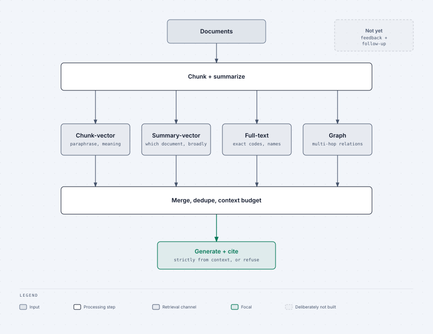
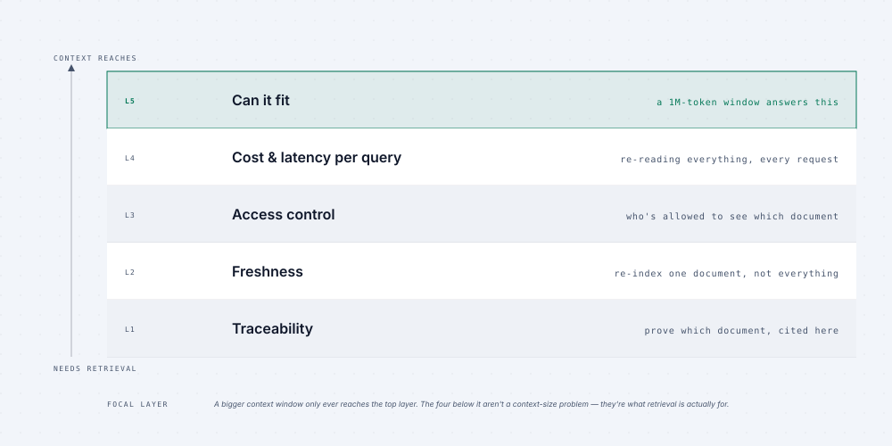

Continuing education · 01 · Production improvement loop
Turn every RAG interaction into a better next release
Instrument the application, listen to users, then give Claude Code or Codex real evidence — not a vague request to “make the RAG better.”
Today’s tangible win
Interaction → log → user feedback → agent analysis → improvement plan → scoped fix → fresh evidence. The output is a defensible plan, not a collection of guesses.
1 · Log every interaction before you tune anything
For each answer, store a stable interaction ID, user and entry point, exact question, request parameters, retrieved documents by channel, final context, answer, citations, latency, cost, and errors.
A bad answer without its trace is an anecdote. A bad answer with its trace is an engineering case.

2 · Put feedback on the same record
Add thumbs-up and thumbs-down below every answer, with an optional comment. Write the rating, comment, and time back to that interaction ID. Feedback tells you which failures matter; the log tells you what the system actually did.

3 · Hand real logs to Claude Code or Codex
Pull 20–30 negative-feedback rows. Redact sensitive material, then provide the query, results by channel, context, answer, citations, latency, and comment. Ask the agent to classify each failure as retrieval_miss, ranking_miss, unfaithful_answer, over_refusal, under_refusal, or followup_lost.
Analyse these negative-feedback interactions.
For each, name one failure class and cite the evidence in the log.
Group recurring patterns. Do not suggest a fix yet.
If evidence is insufficient, say which log field is missing.
4 · Ask for a plan, then scope one fix
Give the classified batch back to Claude Code or Codex. Require a ranked plan that connects each change to its evidence, responsible layer, expected metric movement, regression case, and verification method. Start with the smallest high-impact fix.
Using the classified logs, propose a ranked RAG improvement plan.
For each item: evidence, responsible layer, change, risk, acceptance criterion, regression test, and fresh-log verification.
Do not change unrelated retrieval channels or the generation prompt.5 · Improve in an order that keeps evidence intact

- Make logs and feedback reliable first.
- Fix one measured failure class in its responsible layer.
- Add a regression case from a real interaction.
- Ship the scoped change.
- Run the same analysis on fresh logs and compare counts.
Deliverable
A prioritized RAG improvement plan linked to production evidence, with one regression case per proposed fix and an explicit re-analysis step after release.
Next action: add the interaction log and feedback control before spending another hour tuning prompts or embeddings.